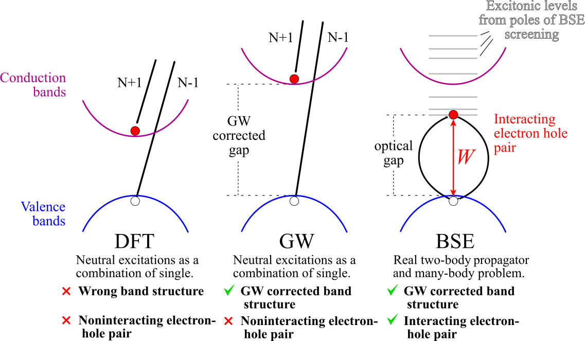

Bethe-Salpeter calculations with AbiPy¶
This lesson discusses how to calculate the macroscopic dielectric function, \(\epsilon_\infty(\omega)\), including excitonic effects within the Bethe-Salpeter equation (BSE). Crystalline silicon is used as test case.
For a more detailed description of the Abinit implementation, see the official Abinit BSE tutorial. A brief description of the formalism can be found in the BSE_notes.
Typical BSE flowchart¶
The flowchart of a typical Bethe-Salpeter run is schematically depicted in the diagram below:

The WFK file (KSS file in old versions of Abinit) contains the Kohn-Sham (KS) wavefunctions and energies and is represented with an ellipsis.
The path on the left indicated with blue arrows represents the RPA calculation (optdriver=3) that produces the SCR file (see also the first lesson of the \(GW\) tutorial).
Once the WFK (KSS) and the SCR file are available, we can finally contruct the BSE Hamiltonian
and solve the Bethe-Salpeter problem (the green rectangle at the bottom of the flowchart).
The construction of the Bethe-Salpeter Hamiltonian represents a significant portion of the overall CPU time due to the large number of transitions (bands and in particular \(k\)-points) needed for an accurate description of the frequency-dependence of the polarizability.
For BSE computations, it is common practice to simulate the self-energy corrections by employing the scissors operator whose value can be obtained either from experiments or from ab-initio calculations. The scissors operator allows one to avoid a costly \(GW\) calculation that should performed for all the \(k\)-points and bands included in the transition space (the optional path on the right indicated with yellow arrows that corresponds to optdriver=4).
For this reason, in this lesson, we will employ two commonly used approximations that will reduce considerably the computational cost of the BSE flowchart while giving reasonably accurate results:
The ab-initio \(W\) is replaced by a model dielectric function that is constructed from the GS density \(n(r)\) and the additional variable
mdf_epsinfthat gives the value of the static limit \(\epsilon_\infty(\omega=0)\). This approximation allows us to bypass the blue boxes in the diagram above (optdriver=3)The modifications introduced by the \(GW\) self-energy on the initial KS band structure are approximated with a scissor operator (
mbpt_sciss). This approximation allows us to bypass the yellow boxes in the diagram above (optdriver=4).
Under these assumptions, the BSE flowchart reduces to a simple GS-SCF run to get \(n(r)\) plus a NSCF calculation of the band structure on a dense \(k\)-mesh and, finally, the solution of the BSE problem (the green box).
AbiPy flow for BSE with the model dielectric function¶
After the standard imports:
import warnings
warnings.filterwarnings("ignore") # to get rid of deprecation warnings
import abipy.abilab as abilab
abilab.enable_notebook() # This line tells AbiPy we are running inside a notebook
import abipy.flowtk as flowtk
# This line configures matplotlib to show figures embedded in the notebook.
# Replace `inline` with `notebook` in classic notebook
%matplotlib inline
# Option available in jupyterlab. See https://github.com/matplotlib/jupyter-matplotlib
#%matplotlib widget
We import from lesson_bse the function that builds the 3 input objects we are going to use to build the Flow:
from lesson_bse import make_scf_nscf_bse_inputs
abilab.print_source(make_scf_nscf_bse_inputs)
def make_scf_nscf_bse_inputs(ngkpt=(6, 6, 6), ecut=6, ecuteps=3,
mdf_epsinf=12.0, mbpt_sciss="0.8 eV"):
"""
Build and returns three `AbinitInput` objects to perform a
GS-SCF + GS-NSCF + BSE calculation with model dielectric function.
Args:
ngkpt: Three integers giving the number of divisions for the k-mesh.
ecut: Cutoff energy for the wavefunctions.
ecuteps: Cutoff energy for the screened interation W_{GG'}.
mdf_epsinf: Static limit of the macroscopic dielectric functions.
Used to build the model dielectric function.
mbpt_sciss: Scissors operator energy (used to open the initial KS gap).
"""
multi = abilab.MultiDataset(structure=abidata.structure_from_ucell("Si"),
pseudos=abidata.pseudos("14si.pspnc"), ndtset=3)
multi.set_mnemonics(True)
# Variables common to the three datasets.
multi.set_vars(
ecut=ecut,
nband=8,
istwfk="*1",
diemac=12.0,
#iomode=3,
)
# SCF run to get the density.
multi[0].set_vars(tolvrs=1e-8)
multi[0].set_kmesh(ngkpt=ngkpt, shiftk=(0, 0, 0))
# NSCF run on a randomly shifted k-mesh (improve the convergence of optical properties)
multi[1].set_vars(
iscf=-2,
nband=15,
tolwfr=1e-8,
chksymbreak=0, # Skip the check on the k-mesh.
)
# This shift breaks the symmetry of the k-mesh.
multi[1].set_kmesh(ngkpt=ngkpt, shiftk=(0.11, 0.21, 0.31))
# BSE run with Haydock iterative method (only resonant + W + v)
multi[2].set_vars(
optdriver=99, # BS calculation
chksymbreak=0, # To skip the check on the k-mesh.
bs_calctype=1, # L0 is constructed with KS orbitals and energies.
mbpt_sciss=mbpt_sciss, # Scissors operator used to correct the KS band structure.
bs_exchange_term=1, # Exchange term included.
bs_coulomb_term=21, # Coulomb term with model dielectric function.
mdf_epsinf=mdf_epsinf, # Parameter for the model dielectric function.
bs_coupling=0, # Tamm-Dancoff approximation.
bs_loband=2, # Lowest band included in the calculation
nband=6, # Highest band included in the calculation
bs_freq_mesh="0 6 0.02 eV", # Frequency mesh for the dielectric function
bs_algorithm=2, # Use Haydock method.
zcut="0.15 eV", # Complex shift to avoid divergences in the continued fraction.
ecutwfn=ecut, # Cutoff for the wavefunction.
ecuteps=ecuteps, # Cutoff for W and /bare v.
inclvkb=2, # The commutator for the optical limit is correctly evaluated.
)
# Same shift as the one used in the previous dataset.
multi[2].set_kmesh(ngkpt=ngkpt, shiftk=(0.11, 0.21, 0.31))
scf_input, nscf_input, bse_input = multi.split_datasets()
return scf_input, nscf_input, bse_input
scf_inp, nscf_inp, bse_inp = make_scf_nscf_bse_inputs(ngkpt=(4, 4, 4), ecut=6, ecuteps=3)
The function make_scf_nscf_bse_inputs returns three AbinitInput objects:
The first input (
scf_inp) solves the KS equations on a Monkhorst-Pack mesh to obtain the groud-state density \(n(r)\).The second input (
nscf_inp) uses the density produced byscf_inpto compute the KS band structure on a randomly-shifted \(k\)-mesh in order to accelerate the convergence of the optical properties with respect to the \(k\)-sampling.Finally, the third input (
bse_inp) uses theWFKfile produced in the previous step to solve an approximated BSE equation in which the ab-initio screened interation \(W\) is approximated by a model dielectric function that depends only on \(n(r)\) and the input variablemdf_epsinfthat gives the value of \(\epsilon_\infty(0)\)
The variables governing the BSE run are those in the vargw section of bse_inp:
bse_inp
#### SECTION: basic
##############################################
#### <Energy CUToff>
ecut 6
#### <Number of BANDs>
nband 6
#### <Number of Grid points for K PoinTs generation>
ngkpt 4 4 4
#### <KPoinTs OPTion>
kptopt 1
#### <Number of SHIFTs for K point grids>
nshiftk 1
#### <SHIFT for K points>
shiftk 0.11 0.21 0.31
##############################################
#### SECTION: bse
##############################################
#### <Bethe-Salpeter CALCulation TYPE>
bs_calctype 1
#### <Bethe-Salpeter EXCHANGE TERM>
bs_exchange_term 1
#### <Bethe-Salpeter COULOMB TERM>
bs_coulomb_term 21
#### <Bethe-Salpeter COUPLING>
bs_coupling 0
#### <Bethe-Salpeter Lowest Occupied BAND>
bs_loband 2
#### <Bethe-Salpeter FREQuency MESH>
bs_freq_mesh 0 6 0.02 eV
#### <Bethe-Salpeter ALGORITHM>
bs_algorithm 2
##############################################
#### SECTION: dev
##############################################
#### <Integer for choice of STorage of WaveFunction at each k point>
istwfk *1
##############################################
#### SECTION: gstate
##############################################
#### <model DIElectric MACroscopic constant>
diemac 12.0
#### <OPTions for the DRIVER>
optdriver 99
#### <CHecK SYMmetry BREAKing>
chksymbreak 0
##############################################
#### SECTION: gw
##############################################
#### <Many Body Perturbation Theory SCISSor operator>
mbpt_sciss 0.8 eV
#### <Model Dielectric Function, EPSilon INFinity>
mdf_epsinf 12.0
#### <Z-CUT>
zcut 0.15 eV
#### <Energy CUT-off for WaveFunctioNs>
ecutwfn 6
#### <Energy CUT-off for EPSilon (the dielectric matrix)>
ecuteps 3
#### <INCLude VKB>
inclvkb 2
##############################################
#### STRUCTURE
##############################################
#### <Number of ATOMs>
natom 2
#### <Number of TYPes of AToms>
ntypat 1
#### <TYPe of AToms>
typat 1 1
#### <charge -Z- of the NUCLeus>
znucl 14
#### <vectors (X) of atom positions in REDuced coordinates>
xred
0.0000000000 0.0000000000 0.0000000000
0.2500000000 0.2500000000 0.2500000000
#### <CELL lattice vector scaling>
acell 1.0 1.0 1.0
#### <Real space PRIMitive translations>
rprim
0.0000000000 5.1085000000 5.1085000000
5.1085000000 0.0000000000 5.1085000000
5.1085000000 5.1085000000 0.0000000000
Once we have our three input objects, we can create a flow to automate the calculation.
Note that AbiPy already provides the BseMdfWork class that is explicitly designed for this kind of calculation:
from lesson_bse import build_bse_flow
abilab.print_source(build_bse_flow)
def build_bse_flow(options):
"""
Build a flow to solve the BSE with default parameters.
Args:
options: Command line options.
Return:
Flow object.
"""
workdir = options.workdir if (options and options.workdir) else "flow_bse"
flow = flowtk.Flow(workdir=workdir)
# Build a Work for BSE calculation with the model dielectric function ...
scf_inp, nscf_inp, bse_inp = make_scf_nscf_bse_inputs()
work = flowtk.BseMdfWork(scf_inp, nscf_inp, bse_inp)
# and add it to the flow
flow.register_work(work)
return flow
Let’s build the flow:
flow = build_bse_flow(options=None)
The graphical representation of the flow reveals that the BseTask depends on the NscfTask that
in turns depends on the initial ScfTask.
flow.get_graphviz()
#flow.plot_networkx(with_edge_labels=True);
If you are working with python, you can build the directories of the Flow with:
flow.build_and_pickle_dump()
Now you can execute the lesson_bse.py script to generate the flow and then use:
abirun.py flow_bse scheduler
Alternatively, one can use the files in the github repository and use AbiPy to analyze the data.
Analyzing the results¶
Now we can finally analyze the results. In this case, we are mainly interested in the
frequency-dependent macroscopic dielectric function, \(\epsilon_\infty(\omega)\), produced
by the BseTask
# The BseTask is the last task in the first work
# i.e. flow[0][2] or, much better, flow[0][-1]
bse_task = flow[0][-1]
bse_task
<BseTask, node_id=443161, workdir=flow_bse/w0/t2>
The BseTask has produced a netcdf file (MDF.nc) containing the most important results of the run. Let’s open the file with:
mdf_file = abilab.abiopen("flow_bse/w0/t2/outdata/out_MDF.nc")
print(mdf_file)
================================= File Info =================================
Name: out_MDF.nc
Directory: /Users/gmatteo/git_repos/abipy_book/abipy_book/bse/flow_bse/w0/t2/outdata
Size: 122.77 kb
Access Time: Thu Jul 8 02:48:30 2021
Modification Time: Thu Jul 8 02:04:51 2021
Change Time: Thu Jul 8 02:04:51 2021
================================= Structure =================================
Full Formula (Si2)
Reduced Formula: Si
abc : 3.823046 3.823046 3.823046
angles: 60.000000 60.000000 60.000000
Sites (2)
# SP a b c
--- ---- ---- ---- ----
0 Si 0 0 0
1 Si 0.25 0.25 0.25
Abinit Spacegroup: spgid: 0, num_spatial_symmetries: 48, has_timerev: True, symmorphic: True
================================== Q-points ==================================
0) [+0.939, +0.000, +0.000], weight: 0.000
1) [+0.000, +0.939, +0.000], weight: 0.000
2) [+0.000, +0.000, +0.939], weight: 0.000
3) [+0.000, +0.813, +0.813], weight: 0.000
4) [+0.813, +0.000, +0.813], weight: 0.000
5) [+0.813, +0.813, +0.000], weight: 0.000
and use matplotlib to plot the imaginary part of \(\epsilon_\infty(\omega)\)
mdf_file.plot_mdfs();
Meaning of the three curves:
EXC is \(\epsilon_\infty(\omega)\) computed from the BSE with excitonic effects included
KS-RPA is the analogous quantity computed within the RPA and the KS band structure
GW-RPA corresponds to the RPA expression but computed with modified band energies obtained by “opening” the KS eigenvalues with a constant scissor operator that tries to mimic the \(GW\) corrections (
soenergyvariable)
It is worth stressing that:
The RPA-KS spectrum underestimates the experimental optical threshold due to the well-know band-gap problem of DFT. Most importantly, the amplitude of the first peak is underestimated.
The RPA-GW results with QP corrections simulated with
soenergydoes not show any significant improvement over RPA-KS: the RPA-GW spectrum is just shifted towards higher frequencies due to opening of the gap, but the shape of the two spectra is very similar, in particular the amplitude of the first peak is still underestimated.On the contrary, the inclusion of the BSE kernel leads to important changes both in the optical threshold as well as in the amplitude of the first peak. This simple analysis tells us that the first peak in the absorption spectrum of silicon has a strong excitonic character that is not correctly described within the RPA. Our first BS spectrum is not converged at all and it barely resembles the experimental result, nevertheless this unconverged calculation is already able to capture the most important physics.
The difference among the three approaches is schematically depicted in the figure below:
To plot the real part of \(\epsilon_\infty(\omega)\)
mdf_file.plot_mdfs(cplx_mode="re");
It should be stressed that the screened interaction \(W\) is the fundamental ingredient that leads to the attractive interaction between electrons and holes (excitonic effects). In a metallic system, the dielectric function is large, \(W\) is small and excitonic effects are strongly damped.
To understand this point, we can do a test calculation with a very large value of mdf_epsinf
so that our BSE Hamiltonian will be constructed with a metallic \(W\):
from lesson_bse import build_bse_metallicW_flow
abilab.print_source(build_bse_metallicW_flow)
def build_bse_metallicW_flow(options):
"""
Build a flow to solve the BSE with metallic screening.
Note the value of `mdf_epsinf`.
Args:
options: Command line options.
Return:
Flow object.
"""
workdir = options.workdir if (options and options.workdir) else "flow_bse_metallicW"
flow = flowtk.Flow(workdir=workdir)
# Model dielectric function with metallic screening
scf_inp, nscf_inp, bse_inp = make_scf_nscf_bse_inputs(ngkpt=(4, 4, 4), ecut=6, ecuteps=3,
mdf_epsinf=1.0e+12)
flow.register_work(flowtk.BseMdfWork(scf_inp, nscf_inp, bse_inp))
return flow
metalW_flow = build_bse_metallicW_flow(options=None)
Let’s assume we have already executed the flow and let’s have a look at the results:
with abilab.abiopen("flow_bse_metallicW/w0/t2/outdata/out_MDF.nc") as mdf_file:
mdf_file.plot_mdfs();
As you can see, the EXC curve computed with a metallic \(W\) is similar to the results obtained in GW-RPA. In particular the first peak is now shifted towards higher frequencies and its amplitude is decreased when compared to the previous results.
This behaviour can be easily understood if we consider that
the BSE formalism reduces to the RPA if \(W\) tends to 0.
The EXC curve is still shifted towards higher frequencies when compared with KS-RPA
but this effect is mainly due to the scissor operator that opens the KS gap.
A similar calculation done with soenergy=0 would give an EXC curve similar to KS-RPA.
This test is left as an optional exercise.
Convergence study with respect to the \(k\)-point sampling¶
The most important parameter that should be checked for convergence is the number of \(k\)-points. This convergence study represents the most tedious and difficult part since it requires the generation of new WFK files for each k-mesh (the list of \(k\)-points for the wavefunctions and the set of \(q\)-points in the screening must be consistent with each other).
In the previous section, we have shown how to build a flow for BSE calculation with a fixed
\(k\)-points sampling.
We can thus reuse the same logic to construct a Flow made of multiple BseMdfWorks,
each Work will have a different \(k\)-point sampling.
Let’s create, for example, a Flow that solves that BSE equation on
a 4x4x4, 6x6x6 and a 8x8x8 \(k\)-mesh:
from lesson_bse import build_bse_kconv_flow
abilab.print_source(build_bse_kconv_flow)
def build_bse_kconv_flow(options):
"""
Build a flow to analyze the convergence of the BSE spectrum wrt k-point sampling.
Args:
options: Command line options.
Return:
Flow object.
"""
workdir = options.workdir if (options and options.workdir) else "flow_bse_kconv"
flow = flowtk.Flow(workdir=workdir)
# 3 works with differet ngkpt.
for nk in [4, 6, 8]:
scf_inp, nscf_inp, bse_inp = make_scf_nscf_bse_inputs(ngkpt=3 * [nk], ecut=6, ecuteps=3)
work = flowtk.BseMdfWork(scf_inp, nscf_inp, bse_inp)
flow.register_work(work)
return flow
flow_kconv = build_bse_kconv_flow(options=None)
flow_kconv.get_graphviz()
#flow_kconv.plot_networkx();
Change the lesson_bse.py script so that build_bse_kconv_flow is called in main instead of build_bse_flow. Run the script and submit the calculation with abirun.py FLOWDIR scheduler as usual.
Our Flow has three BseTasks and therefore three different MDF.nc files containing \(\epsilon_\infty(\omega)\).
The MDF files are available in the github repository.
In order to plot the three \(\epsilon_\infty(\omega)\) on the same graph, we have use the MdfRobot
that will gather the results for us:
robot = abilab.MdfRobot.from_dir("flow_bse_kconv")
robot
- w2/t2/outdata/out_MDF.nc
- w0/t2/outdata/out_MDF.nc
- w1/t2/outdata/out_MDF.nc
We can now finally compare the imaginary and the real part of \(\epsilon_\infty(\omega)\) with matplotlib:
plotter = robot.get_multimdf_plotter()
plotter.plot();
Exercises¶
Use make_scf_nscf_bse_inputs and BseMdfWork to perform the following convergence studies:
Convergence with respect to the number of planewaves in the screening (
ecuteps)Convergence with respect to the number of \(k\)-points
See also the discussion reported in the official BSE tutorial